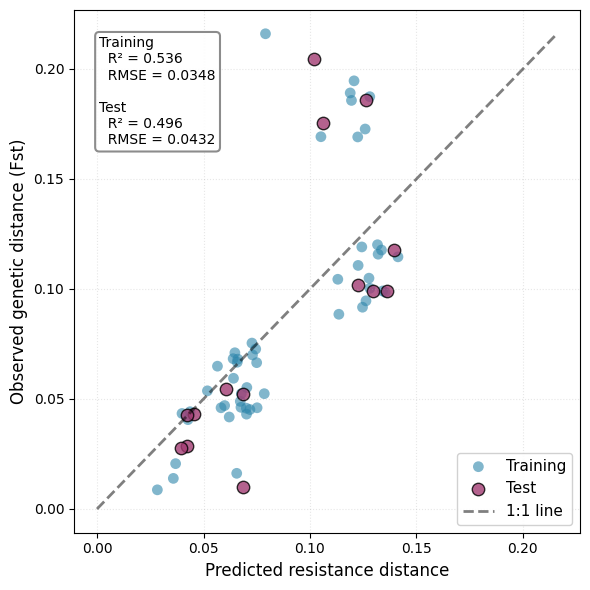

Inverse landscape genetics¤
Traditional landscape genetics assumes a priori which habitat features facilitate or impede movement. Inverse landscape genetics reverses this approach, inferring permeability patterns directly from genetic data. This notebook demonstrates fitting a neural network to predict landscape resistance from land-cover features, optimizing the model to match observed genetic differentiation (Fst) between sampling sites.
We use genetic data from the Mountain Pygmy-possum (Burramys parvus), an endangered marsupial endemic to alpine regions of southeastern Australia, kindly provided by Cesar Australia. We'll use land-cover data to model landscape permeability and fit the model to observed genetic distances, obtained from ESA WorldCover.

Prerequisites¤
pip install jaxscape equinox optimistix rioxarray geopandas scikit-learn
We've prepared the data for you to focus on the modeling aspects; you can download the dataset here.
import time
import equinox as eqx
import geopandas as gpd
import jax
import jax.numpy as jnp
import matplotlib.pyplot as plt
import numpy as np
import optimistix as optx
import rioxarray
import xarray as xr
from equinox import nn
from jaxscape import GridGraph, ResistanceDistance
from jaxscape.solvers import CholmodSolver
from sklearn.metrics import mean_squared_error, r2_score
from sklearn.model_selection import train_test_split
# Set random seed for reproducibility
np.random.seed(42)
Configuration parameters¤
# File paths (adjust to your data location)
LANDCOVER_PATH = "../data/cesar/landcover_7855.tif"
SITE_METADATA_PATH = "../data/cesar/site_metadata.gpkg"
GENETIC_DISTANCES_PATH = "../data/cesar/genetic_dissimilarity.npy"
# Model configuration
COARSENING_FACTOR = (
10 # Spatial downsampling of feature raster to accelerate computation
)
SOLVER = CholmodSolver() # Fast linear solver for large graphs
DISTANCE_FUN = ResistanceDistance(solver=SOLVER) # Effective resistance distance
MAX_STEPS = 500 # Maximum optimization iterations
# Alternative distance metric for experimentation:
# DISTANCE_FUN = LCPDistance() # Least-cost path distance
Load the data¤
# Load land-cover raster
predictor_raster = rioxarray.open_rasterio(
LANDCOVER_PATH,
mask_and_scale=True,
)
# Load site metadata (geographic locations)
site_metadata = gpd.read_file(SITE_METADATA_PATH)
site_gdf = site_metadata.to_crs(epsg=7855) # Reproject to Australian GDA2020
# Load genetic distance matrix
genetic_distances = np.load(GENETIC_DISTANCES_PATH)
print(f"Predictor raster shape: {predictor_raster.shape}")
print(f"Number of sites: {len(site_gdf)}")
print(f"Genetic distance matrix shape: {genetic_distances.shape}")
Predictor raster shape: (1, 4596, 3052)
Number of sites: 12
Genetic distance matrix shape: (12, 12)
Prepare features and targets¤
The land-cover raster requires preprocessing before feeding it to the neural network. We first compress the sparse WorldCover class IDs into a contiguous range (0..K-1), then one-hot encode them into binary feature vectors. Spatial coarsening via mean pooling downsamples the raster while preserving land-cover composition within each aggregated cell, capturing habitat heterogeneity without forcing discrete classifications. Finally, we map each sampling site to its nearest grid cell in the coarsened raster.
def prepare_feature_targets(predictor_raster, site_gdf, coarsening_factor):
"""Process land-cover and create model inputs.
Returns
-------
features_onehot_coarse : array
One-hot encoded land-cover features after coarsening (H, W, K)
unique_classes : array
Original WorldCover class values
target_nodes : array
Node indices for sampling sites
grid : GridGraph
Reference grid for node indexing
feature_da : xarray.DataArray
Coarsened feature raster with coordinates
"""
# Compress WorldCover classes to contiguous IDs
raw_band = np.asarray(predictor_raster.sel(band=1))
unique_vals, inverse = np.unique(raw_band.ravel(), return_inverse=True)
class_ids = inverse.reshape(raw_band.shape).astype(np.int32)
features_categorical = jnp.array(class_ids).squeeze()
unique_classes = jnp.array(unique_vals)
print(f"Found {len(unique_vals)} unique land-cover classes")
# One-hot encode: (H, W) -> (H, W, K)
features_onehot = jax.nn.one_hot(features_categorical, num_classes=len(unique_vals))
# Reorder for coarsening: (H, W, K) -> (K, H, W)
features_onehot = jnp.moveaxis(features_onehot, -1, 0)
# Coarsen using mean pooling (preserves class composition)
coords = {
"band": np.arange(features_onehot.shape[0]),
"y": predictor_raster.y.values,
"x": predictor_raster.x.values,
}
feature_da = xr.DataArray(
features_onehot,
coords=coords,
dims=("band", "y", "x"),
)
feature_da = feature_da.coarsen(
x=coarsening_factor, y=coarsening_factor, boundary="trim"
).mean()
# Back to (H, W, K)
features_onehot_coarse = jnp.moveaxis(feature_da.data, 0, -1)
print(f"Coarsened feature shape: {features_onehot_coarse.shape}")
# Map site coordinates to coarsened grid indices
x_idx = jnp.array(
[
int(np.argmin(np.abs(feature_da.x.values - x)))
for x in site_gdf.geometry.x.values
]
)
y_idx = jnp.array(
[
int(np.argmin(np.abs(feature_da.y.values - y)))
for y in site_gdf.geometry.y.values
]
)
# Create reference grid for node indexing
grid = GridGraph(
jnp.ones((feature_da.x.size, feature_da.y.size)), fun=lambda x, y: (x + y) / 2
)
target_nodes = grid.coord_to_index(x_idx, y_idx)
return features_onehot_coarse, unique_classes, target_nodes, grid, feature_da
# Process features
(
features_onehot,
unique_classes,
target_nodes,
ref_grid,
coarse_feature_da,
) = prepare_feature_targets(predictor_raster, site_gdf, COARSENING_FACTOR)
print(f"Target nodes (site indices): {target_nodes}")
Found 8 unique land-cover classes
Coarsened feature shape: (459, 305, 8)
Target nodes (site indices): [112719 65962 29307 27474 35742 109760 36622 37079 76894 63615
35723 91477]
from matplotlib.patches import Circle
# Visualize coarsened land-cover with sites
node_coords = ref_grid.index_to_coord(target_nodes)
x_indices, y_indices = node_coords[:, 0], node_coords[:, 1]
fig, ax = plt.subplots(figsize=(12, 10))
im = ax.imshow(features_onehot.argmax(axis=-1), cmap="Accent")
# Add colorbar for land-cover types
plt.colorbar(im, ax=ax, label="Land-cover type", shrink=0.6)
# Annotate sites
for xi, yi, name in zip(x_indices, y_indices, site_gdf["site_name"].values):
circle = Circle(
(int(xi), int(yi)),
radius=3,
fill=False,
edgecolor="#f72585",
linewidth=2,
)
ax.add_patch(circle)
ax.text(
int(xi),
int(yi) - 5,
str(name),
color="black",
fontsize=10,
fontweight="bold",
ha="center",
va="bottom",
bbox=dict(facecolor="white", alpha=0.9, edgecolor="black", pad=2),
)
ax.set_title("Land-cover types with sampling sites", fontsize=14, pad=20)
ax.axis("off")
plt.tight_layout()
plt.show()

Define the permeability model¤
We build a neural network mapping one-hot land-cover features to positive permeability values: \(\text{permeability} = \exp(\text{NN}(\text{features})) + \epsilon\). The architecture takes a K-dimensional one-hot vector (land-cover classes), passes it through two hidden layers with ReLU activation (16 units each), and outputs a single value that is exponentiated to ensure positivity. We apply this model pixel-wise via vmap to generate the full permeability surface.
def build_model(num_classes: int, seed: int = 2) -> tuple:
"""Build neural permeability model.
Parameters
----------
num_classes : int
Number of land-cover classes
seed : int
Random seed for initialization
Returns
-------
model : eqx.Module
Complete model
params : pytree
Trainable parameters
static : pytree
Static (non-trainable) components
"""
key = jax.random.PRNGKey(seed)
class PermeabilityModel(eqx.Module):
layers: list
num_classes: int
def __init__(self, num_classes: int, key):
self.num_classes = num_classes
k1, k2, k3 = jax.random.split(key, 3)
hidden_dim = 16
self.layers = [
nn.Linear(num_classes, hidden_dim, key=k1),
jax.nn.relu,
nn.Linear(hidden_dim, hidden_dim, key=k2),
jax.nn.relu,
nn.Linear(hidden_dim, 1, key=k3),
]
def __call__(self, x):
"""Map one-hot feature to positive permeability."""
for layer in self.layers:
x = layer(x)
return jnp.minimum(
jnp.exp(x) + 1e-1, 1e3
) # Ensure positive permeability, keep within reasonable bounds
model = PermeabilityModel(num_classes, key)
params, static = eqx.partition(model, eqx.is_inexact_array)
return model, params, static
# Initialize model
model, params, static = build_model(len(unique_classes))
print(f"Model initialized with {len(unique_classes)} land-cover classes")
print(f"Trainable parameters: {sum(p.size for p in jax.tree_util.tree_leaves(params))}")
Model initialized with 8 land-cover classes
Trainable parameters: 433
Before training, the model produces random permeability values based on the initialization.
# Apply model to all pixels via vmap
model_vmapped = jax.vmap(jax.vmap(model, in_axes=0), in_axes=0)
initial_permeability = model_vmapped(features_onehot).squeeze()
fig, ax = plt.subplots(figsize=(12, 10))
im = ax.imshow(initial_permeability, cmap="RdYlGn")
ax.set_title("Initial permeability prediction", fontsize=14, pad=20)
ax.axis("off")
plt.colorbar(im, ax=ax, label="Permeability", shrink=0.6)
plt.tight_layout()
plt.show()

Define loss function and training setup¤
We minimize mean squared error (MSE) between predicted resistance distances and observed genetic distances. The training loop predicts pixel-wise permeability, constructs a GridGraph, computes pairwise resistance distances between sampling sites, and backpropagates gradients through the entire pipeline using L-BFGS optimization.
We split pairwise distances (upper triangle of the matrix) into 80% training and 20% test sets to evaluate generalization. This train/test split reveals whether the model learns meaningful permeability patterns or simply memorizes training data.
@eqx.filter_jit
def loss_fn(params, args):
static, features, target_flat_train, tri_i_train, tri_j_train = args
# Reconstruct model and predict permeability surface
model = eqx.combine(params, static)
model_vmapped = jax.vmap(jax.vmap(model, in_axes=0), in_axes=0)
permeability = model_vmapped(features).squeeze()
# Build graph and compute permeability distances
grid = GridGraph(permeability, fun=lambda x, y: (x + y) / 2)
predicted_distances = DISTANCE_FUN(grid, nodes=target_nodes)
# Extract training pairs and compute loss
pred_flat_train = predicted_distances[tri_i_train, tri_j_train]
return ((target_flat_train - pred_flat_train) ** 2).mean()
# Extract upper triangle indices (all unique pairs)
n_sites = genetic_distances.shape[0]
tri_i_all, tri_j_all = np.triu_indices(n_sites, k=1)
target_flat_all = np.asarray(genetic_distances)[tri_i_all, tri_j_all]
print(f"Total pairwise distances: {len(target_flat_all)}")
# Train/test split (80/20)
(
target_flat_train,
target_flat_test,
tri_i_train,
tri_i_test,
tri_j_train,
tri_j_test,
) = train_test_split(
target_flat_all,
tri_i_all,
tri_j_all,
test_size=0.2,
random_state=2,
)
# Convert to JAX arrays for training
tri_i_train = jnp.array(tri_i_train)
tri_j_train = jnp.array(tri_j_train)
tri_i_test = np.array(tri_i_test)
tri_j_test = np.array(tri_j_test)
print(f"Training pairs: {len(target_flat_train)}")
print(f"Test pairs: {len(target_flat_test)}")
# Sanity check: compute initial loss
initial_loss = loss_fn(
params, (static, features_onehot, target_flat_train, tri_i_train, tri_j_train)
)
print(f"\nInitial training loss: {initial_loss:.6f}")
Total pairwise distances: 66
Training pairs: 52
Test pairs: 14
Initial training loss: 3.885685
Training¤
The optimization typically takes several minutes depending on graph size and the number of iterations required for convergence.
# Configure L-BFGS optimizer
solver = optx.LBFGS(
rtol=1e-5, # Relative tolerance for convergence
atol=1e-5, # Absolute tolerance
verbose=frozenset({"loss"}), # Print loss during optimization
)
print("Starting optimization...\n")
print("=" * 60)
start_train_time = time.time()
# Run optimization
opt_solution = optx.minimise(
loss_fn,
solver,
params,
args=(static, features_onehot, target_flat_train, tri_i_train, tri_j_train),
max_steps=MAX_STEPS,
)
training_time = time.time() - start_train_time
print("=" * 60)
print(f"\n✓ Training completed in {training_time:.2f} seconds")
print(f"\nOptimization statistics:")
print(opt_solution.stats)
Starting optimization...
============================================================
Loss on this step: 3.8856894969940186, Loss on the last accepted step: 0.0
Loss on this step: 0.009540650993585587, Loss on the last accepted step: 3.8856894969940186
Loss on this step: 0.009540597908198833, Loss on the last accepted step: 3.8856894969940186
Loss on this step: 0.0021442112047225237, Loss on the last accepted step: 3.8856894969940186
Loss on this step: 0.0021369722671806812, Loss on the last accepted step: 0.0021442112047225237
Loss on this step: 0.0019680014811456203, Loss on the last accepted step: 0.0021369722671806812
Loss on this step: 0.0019522022921591997, Loss on the last accepted step: 0.0019680014811456203
Loss on this step: 0.0019508968107402325, Loss on the last accepted step: 0.0019522022921591997
Loss on this step: 0.0019490730483084917, Loss on the last accepted step: 0.0019508968107402325
Loss on this step: 0.001943937037140131, Loss on the last accepted step: 0.0019490730483084917
Loss on this step: 0.0019331614021211863, Loss on the last accepted step: 0.001943937037140131
Loss on this step: 0.0019099907949566841, Loss on the last accepted step: 0.0019331614021211863
Loss on this step: 0.0018720333464443684, Loss on the last accepted step: 0.0019099907949566841
Loss on this step: 0.0017763919895514846, Loss on the last accepted step: 0.0018720333464443684
Loss on this step: 0.0016488881083205342, Loss on the last accepted step: 0.0017763919895514846
Loss on this step: 0.0016327609773725271, Loss on the last accepted step: 0.0016488881083205342
Loss on this step: 0.0016295629320666194, Loss on the last accepted step: 0.0016327609773725271
Loss on this step: 0.0016266308957710862, Loss on the last accepted step: 0.0016295629320666194
Loss on this step: 0.0016214561183005571, Loss on the last accepted step: 0.0016266308957710862
Loss on this step: 0.0016075350577011704, Loss on the last accepted step: 0.0016214561183005571
Loss on this step: 0.0015825879527255893, Loss on the last accepted step: 0.0016075350577011704
Loss on this step: 0.001501547172665596, Loss on the last accepted step: 0.0015825879527255893
Loss on this step: 0.06288988888263702, Loss on the last accepted step: 0.001501547172665596
Loss on this step: 0.002140212105587125, Loss on the last accepted step: 0.001501547172665596
Loss on this step: 0.0016243921127170324, Loss on the last accepted step: 0.001501547172665596
Loss on this step: 0.0014579362468793988, Loss on the last accepted step: 0.001501547172665596
Loss on this step: 0.001322284690104425, Loss on the last accepted step: 0.0014579362468793988
Loss on this step: 0.0014171540969982743, Loss on the last accepted step: 0.001322284690104425
Loss on this step: 0.0013643365819007158, Loss on the last accepted step: 0.001322284690104425
Loss on this step: 0.0013415651628747582, Loss on the last accepted step: 0.001322284690104425
Loss on this step: 0.0013335972325876355, Loss on the last accepted step: 0.001322284690104425
Loss on this step: 0.001321864314377308, Loss on the last accepted step: 0.001322284690104425
Loss on this step: 0.0013171337777748704, Loss on the last accepted step: 0.001322284690104425
Loss on this step: 0.001312931883148849, Loss on the last accepted step: 0.0013171337777748704
Loss on this step: 0.0013678910909220576, Loss on the last accepted step: 0.001312931883148849
Loss on this step: 0.0012855114182457328, Loss on the last accepted step: 0.001312931883148849
Loss on this step: 0.0021188759710639715, Loss on the last accepted step: 0.0012855114182457328
Loss on this step: 0.0012452633818611503, Loss on the last accepted step: 0.0012855114182457328
Loss on this step: 0.0012341703986749053, Loss on the last accepted step: 0.0012452633818611503
Loss on this step: 0.00123458297457546, Loss on the last accepted step: 0.0012341703986749053
Loss on this step: 0.0012321530375629663, Loss on the last accepted step: 0.0012341703986749053
Loss on this step: 0.0012285209959372878, Loss on the last accepted step: 0.0012321530375629663
Loss on this step: 0.00122746080160141, Loss on the last accepted step: 0.0012285209959372878
Loss on this step: 0.0012268684804439545, Loss on the last accepted step: 0.00122746080160141
Loss on this step: 0.0012262093368917704, Loss on the last accepted step: 0.0012268684804439545
Loss on this step: 0.0012240996584296227, Loss on the last accepted step: 0.0012262093368917704
Loss on this step: 0.0012296241475269198, Loss on the last accepted step: 0.0012240996584296227
Loss on this step: 0.0012167698005214334, Loss on the last accepted step: 0.0012240996584296227
Loss on this step: 0.001307217637076974, Loss on the last accepted step: 0.0012167698005214334
Loss on this step: 0.0012273594038560987, Loss on the last accepted step: 0.0012167698005214334
Loss on this step: 0.0012153689749538898, Loss on the last accepted step: 0.0012167698005214334
Loss on this step: 0.0012151197297498584, Loss on the last accepted step: 0.0012153689749538898
Loss on this step: 0.0012136436998844147, Loss on the last accepted step: 0.0012153689749538898
Loss on this step: 0.001213698647916317, Loss on the last accepted step: 0.0012136436998844147
Loss on this step: 0.0012138065649196506, Loss on the last accepted step: 0.0012136436998844147
Loss on this step: 0.0012139827013015747, Loss on the last accepted step: 0.0012136436998844147
Loss on this step: 0.0012137620942667127, Loss on the last accepted step: 0.0012136436998844147
Loss on this step: 0.001213753828778863, Loss on the last accepted step: 0.0012136436998844147
Loss on this step: 0.0012136644218116999, Loss on the last accepted step: 0.0012136436998844147
Loss on this step: 0.0012136156437918544, Loss on the last accepted step: 0.0012136436998844147
Loss on this step: 0.0012142040068283677, Loss on the last accepted step: 0.0012136156437918544
Loss on this step: 0.001213707379065454, Loss on the last accepted step: 0.0012136156437918544
Loss on this step: 0.0012137291487306356, Loss on the last accepted step: 0.0012136156437918544
Loss on this step: 0.001213960931636393, Loss on the last accepted step: 0.0012136156437918544
Loss on this step: 0.0012137801386415958, Loss on the last accepted step: 0.0012136156437918544
Loss on this step: 0.0012137687299400568, Loss on the last accepted step: 0.0012136156437918544
Loss on this step: 0.00121373834554106, Loss on the last accepted step: 0.0012136156437918544
Loss on this step: 0.001213651499710977, Loss on the last accepted step: 0.0012136156437918544
Loss on this step: 0.0012136161094531417, Loss on the last accepted step: 0.0012136156437918544
Loss on this step: 0.001213617972098291, Loss on the last accepted step: 0.0012136156437918544
Loss on this step: 0.0012136263540014625, Loss on the last accepted step: 0.0012136156437918544
Loss on this step: 0.001213613897562027, Loss on the last accepted step: 0.0012136156437918544
============================================================
✓ Training completed in 154.03 seconds
Optimization statistics:
{'max_steps': 500, 'num_steps': Array(72, dtype=int32, weak_type=True)}
Visualize the learned permeability surface¤
# Apply fitted model to landscape
fitted_model = eqx.combine(opt_solution.value, static)
fitted_vmapped = jax.vmap(jax.vmap(fitted_model, in_axes=0), in_axes=0)
fitted_permeability = fitted_vmapped(features_onehot).squeeze()
# Compute predicted distances using fitted permeability
pred_grid = GridGraph(fitted_permeability, fun=lambda x, y: (x + y) / 2)
pred_distances = DISTANCE_FUN(pred_grid, nodes=target_nodes)
genetic_np = np.asarray(genetic_distances)
pred_np = np.asarray(pred_distances)
# Extract predictions for train and test pairs
train_pred = pred_np[tri_i_train, tri_j_train]
test_pred = pred_np[tri_i_test, tri_j_test]
train_target = target_flat_train
test_target = target_flat_test
# Compute metrics
r2_train = r2_score(train_target, train_pred)
r2_test = r2_score(test_target, test_pred)
rmse_train = np.sqrt(mean_squared_error(train_target, train_pred))
rmse_test = np.sqrt(mean_squared_error(test_target, test_pred))
fig, ax = plt.subplots(figsize=(6, 6))
# Plot training and test predictions
ax.scatter(
train_pred,
train_target,
s=60,
alpha=0.6,
edgecolor="none",
label="Training",
c="#2E86AB",
)
ax.scatter(
test_pred,
test_target,
s=80,
alpha=0.8,
edgecolor="black",
linewidth=1,
label="Test",
c="#A23B72",
)
# 1:1 reference line
min_val = min(pred_np.min(), genetic_np.min())
max_val = max(pred_np.max(), genetic_np.max())
ax.plot(
[min_val, max_val],
[min_val, max_val],
"k--",
linewidth=2,
alpha=0.5,
label="1:1 line",
)
ax.set_xlabel("Predicted resistance distance", fontsize=12)
ax.set_ylabel("Observed genetic distance (Fst)", fontsize=12)
# Add metrics box
textstr = (
f"Training\n"
f" R² = {r2_train:.3f}\n"
f" RMSE = {rmse_train:.4f}\n\n"
f"Test\n"
f" R² = {r2_test:.3f}\n"
f" RMSE = {rmse_test:.4f}"
)
ax.text(
0.05,
0.95,
textstr,
transform=ax.transAxes,
fontsize=10,
verticalalignment="top",
bbox=dict(
boxstyle="round", facecolor="white", alpha=0.9, edgecolor="gray", linewidth=1.5
),
)
ax.legend(loc="lower right", fontsize=11, framealpha=0.9)
ax.grid(True, alpha=0.3, linestyle=":")
plt.tight_layout()
plt.show()

Our model seems to perform reasonably well, capturing a significant portion of the variance in genetic distances. We can now visualize the learned permeability patterns across the landscape. Remember that this is to be interpreted with great caution, as the inferred permeability surface may reflect complex interactions and correlations in the data rather than direct causal relationships.
fig, ax = plt.subplots(figsize=(12, 10))
# Fitted permeability
im = ax.imshow(fitted_permeability, cmap="RdYlGn_r")
ax.set_title("Predicted permeability surface\nafter training", fontsize=13, pad=15)
ax.axis("off")
plt.colorbar(im, ax=ax, shrink=0.6, label="Permeability")
plt.tight_layout()
plt.show()

The red surface corresponds to mountain ranges, separating the different populations. To go further, we could use more informative features, such as elevation, climate, etc...
Key takeaways¤
This notebook demonstrated inverse landscape genetics: learning resistance patterns from genetic data rather than assuming them a priori. JAX's automatic differentiation enables gradient-based optimization, allowing to train neural networks to map landscape features to a permeability surface. Neural networks provide flexible parameterization capturing nonlinear landscape feature–permeability relationships. It would be interesting to compare this learned resistance surface with expert knowledge about the species' ecology and known barriers to movement in the landscape. We could also assess the predictive performance of e.g. the LCPDistance. But this goes beyond the scope of this notebook.